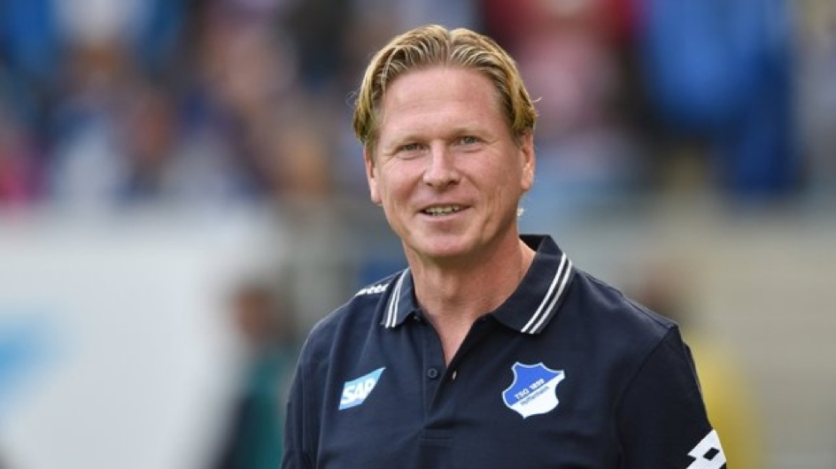

Gisdol wird neuer HSV Trainer
Nach der letzten, ziemlich schlechten Saison des HSV investierte man in der Sommerpause über 30 Millionen Euro in neue Spieler, die den Hamburger Sport Verein wieder in Richtung der oberen Tabellenhälfte bringen sollten...
Jetzt weiterlesen